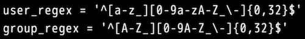

おはようございます。こんにちは。こんばんは。ふぇにっくちゅん です。
この記事に到達したということは「リッチな Markdown 描画アプリの解説するよ」の記事で、疑問を持った方だと思います。
usermap.conf に 「userA:userA」という不思議な記述があり、困惑したのではないでしょうか？
本記事は、この疑問を解決するための解説記事です。
まず、拡張版 Markdown アプリである cat_tmplview は、ユーザやグループの単位で、動的に表示内容を切り替えるアプリです。
このアプリの機能を正確に説明すると、実は「指定されたグループに属するユーザであれば、表示する機能」です。
つまり、ユーザ単位で動的に表示内容を切り替える機能はありません。
まずはこのことを抑えた上で、解説を進めていきます。
皆さんは「グループ」というと、集団や複数何かが属しているイメージをパット思い浮かべるかもしれません。
ですが、「一人グループ」という言葉は聞いたことがあるでしょうか？
つまり、グループというのは一人であっても、いいのです。
実装的な話をすると、ユーザとグループという2種類の属性を扱う処理は複雑になります。
つまり「グループ名＝ユーザ名」と表現できれば、グループという属性だけを処理すれば良いことになります。
要するに、アプリは「グループ」だけを処理するシンプルな機能とすることができます。
その上で、ユーザ単位でもグループ単位でも同じ処理（動的に表示内容を切り替える）が実現できます。
もう既に、メリットは感じ取ってもらえたのではないでしょうか？
しかし、先述した内容は実装者が楽になるメリットです。
今度は少し視点を変えて、usermap.conf を管理する管理者の視点でメリットを解説します。
usermap.conf を管理する人が困ることは何でしょうか？
それは、ユーザが何らかの理由でいなくなった場合です。
社会人用語的には、異動・退職 という言葉を使ったりします。
そのときに、usermap.conf から対象のユーザ行を削除すれば良いです。
ですが、先程の記事で説明したとおり、Markdown ファイルと usermap.conf は連携しています。
このときに、Markdown ファイルからも対象ユーザに関係する文章やパラグラフを削除したいでしょうか？
小規模なコンテンツしか扱わない場合には、削除の手間はそこまでないかもしれません。
しかし、大規模になればなるほど、削除の手間も肥大化します。
これでは、管理者はやっていられません。
これを解決するには、ユーザ単位という扱いをやめ、グループ単位のみで表示内容を制御するほうが良いです。
たとえば、AさんとBさんがサイトのコンテンツを作成していたとします。
そのときに、「userA:userA」、「userB:userB」とするのではなく、以下のような usermap.conf にします。
また、ユーザ名とグループ名がかぶらないように、usermap_config.conf も記載しておきます。

実は、このケースでは、userAグループであろうがOWNERグループであろうが、Aさん的には変わりません。
Bさんも同様です。
このようにしておけば、Aさん が何らかの理由で退職されたときでも、usermap.conf の Aさん の行を削除するだけで良くなります。
Markdown ファイルから Aさん の関係する文章を削除しなくてよいのは、Aさん のために記述した内容ではなく、OWNER として閲覧が必要な文章であるからです。
つまり、後に OWNER となる Cさん が現れるかもしれないのです。
一方で、OWNER ではなく「userA:userA」という usermap.conf であった場合には、これは明示的に Aさん 個人のために記述した内容ということを示しています。
このケースでは、たとえ Cさん が新たに現れたとしても、Aさん 個人のための文章やパラグラフを Cさん に見せることができません。
漏洩事故を防ぐためにも、Markdown 上からは Aさん に依存した文章は削除する必要があります。
つまり、ある程度大規模なサイトとして cats_dogs を運用する場合は、ユーザに依存した usermap.conf の決定は避けるほうが良いことになります。
cats_dogs を利用する場合、サイトの規模感、サイト間のドキュメント移行などを考慮し、usermap.conf をどのように扱うかを設計するとうまくいきます。
勘違いしてはいけないのは、個人に依存する usermap.conf が悪ではないということです。
あくまでも上記は一例であり、cats_dogs の活用は、個人で扱う場合もあれば、短期的に利用する場合もあります。
そのようなときには、個人に依存した「userA:userA」でも良いと思います。
つまりは、状況に応じて選択することが大切ということです。
この節では、グループ単位のみで扱うことで運用面にメリットが発生することを紹介しました。
グループ名にユーザ名を利用する疑問は解けたでしょうか？
すこしトンチが効いた内容だったかもしれません。
「GitHub から Markdown だけ切除してみた」の記事の冒頭で、
この cats_dogs は単なる Markdown ビューアではありません。
と紹介したように、単なる Markdown ビューアではなく、細かいところに色々な工夫が隠れています。
では、引き続き cats_dogs を楽しんでください。